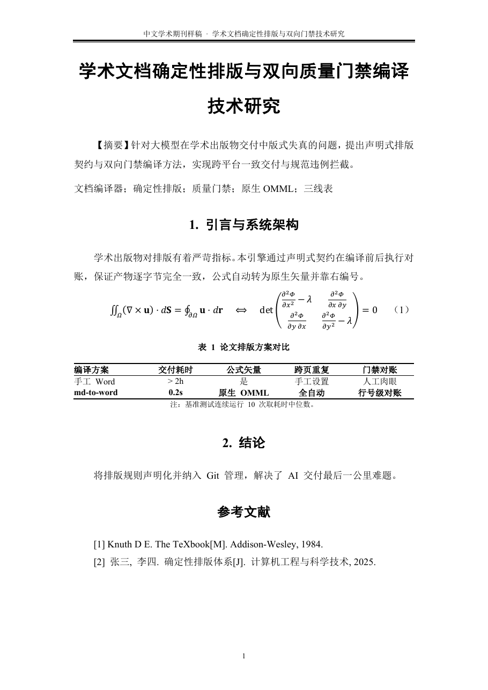

中文学术期刊
GB/T 学术期刊宋体/Times New Roman · 1.5倍行距 · 首行缩进2字符 · 双线页眉 · 规范三线表
这一份的排版契约
- 页眉
- 宋体/Times New Roman 小五(9pt) · 居中对齐 · 行距1.0倍 · 下边框双线(上粗下细双实线) · 距顶端1.5cm
- 文档标题
- 黑体/Times New Roman 二号(22pt) · 加粗 · 居中 · 行距1.5倍 · 段前0磅 / 段后12磅 · 首行缩进0字符 · 无边框
- 摘要内容
- 宋体/Times New Roman 五号(10.5pt) · 两端对齐 · 行距1.5倍 · 首行缩进2字符 · 段前0磅 / 段后6磅
- 关键词
- 宋体/Times New Roman 小四(12pt) · 两端对齐 · 行距1.5倍 · 首行不缩进 · 段前0磅 / 段后12磅
- 章节标题
- 黑体/Times New Roman 三号(16pt) · 加粗 · 居中 · 行距1.5倍 · 段前18磅 / 段后12磅 · 与下段同页(防孤行)
- 正文段落
- 宋体/Times New Roman 小四(12pt) · 两端对齐 · 行距1.5倍 · 首行缩进2字符 · 段前0磅 / 段后0磅
- 数学公式
- 原生 Office Open XML (OMML) 矢量公式 · 居中对齐 · 编号 (#eq-1) 严格靠右对齐 · 双击直接编辑
- 表题
- 宋体/Times New Roman 五号(10.5pt) · 加粗 · 居中 · 行距1.5倍 · 段前6磅 / 段后6磅 · 与下段同页
- 表格网格
- 标准三线表(顶线1.5磅/底线1.5磅/表头线0.75磅) · 表头加粗居中 · 单元格垂直居中 · 跨页自动重复表头
- 表注
- 宋体/Times New Roman 小五(9pt) · 居中 · 行距1.0倍 · 段前0磅 / 段后6磅
- 结论标题
- 黑体/Times New Roman 三号(16pt) · 加粗 · 居中 · 行距1.5倍 · 段前18磅 / 段后12磅 · 与下段同页
- 结论正文
- 宋体/Times New Roman 小四(12pt) · 两端对齐 · 行距1.5倍 · 首行缩进2字符 · 段前0磅 / 段后0磅
- 参考文献
- 宋体/Times New Roman 五号(10.5pt) · 两端对齐 · 行距1.25倍 · 悬挂缩进0.5英寸(2字符) · GB/T 7714 顺序编码制